기계설계산업기사 (2016-05-08 기출문제)
1과목: 기계가공법 및 안전관리
1. 연삭숫돌에 대한 설명으로 틀린 것은?
- 부드럽고 전연성이 큰 연삭에는 고운입자를 사용한다.
- 연삭숫돌에 사용되는 숫돌입자에는 천연산과 인조산이 있다.
- 단단하고 치밀한 공작물의 연삭에는 고운 입자를 사용한다.
- 숫돌과 공작물의 접촉면적이 작은 경우에는 고운 입자를 사용한다.
(정답률: 39%)

2. 나사를 측정할 때 삼침법으로 측정 가능한 것은?
- 골지름
- 유효지름
- 바깥지름
- 나사의 길이
(정답률: 84%)
3. 칩 브레이커(chip breaker)에 대한 설명으로 옳은 것은?
- 칩의 한 종류로서 조각난 칩의 형태를 말한다.
- 드로우 어웨이(throw away)바이트의 일종이다.
- 연속적인 칩의 발생을 억제하기 위한 칩절단장치이다.
- 인서트 팁 모양의 일종으로서 가공 정밀도를 위한 장치이다.
(정답률: 88%)
4. 연삭숫돌의 결합제에 따른 기호가 틀린 것은?
- 고무 -R
- 셀락 – E
- 레지노이드-G
- 비트리파이드 -V
(정답률: 59%)
5. 드릴로 구멍을 뚫은 이후에 사용되는 공구가 아닌 것은?
- 리머
- 센터 펀치
- 카운터 보어
- 카운터 싱크
(정답률: 87%)
6. 다음 중 초음파가공으로 가공하기 어려운 것은?
- 구리
- 유리
- 보석
- 세라믹
(정답률: 46%)
7. 그림과 같이 더브테일 홈 가공을 하려고 할 때 X의 값은 약 얼마인가? (단, tan60°=1.7321, tan30°=0.5774이다.)
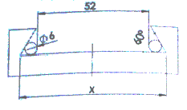
- 60.26
- 68.39
- 82.04
- 84.86
(정답률: 73%)
8. 연삭작업 안전사항으로 틀린 것은?
- 연삭숫돌의 측면부위로 연삭 작업을 수행하지 않는다.
- 숫돌은 나무해머나 고무해머 등으로 음향 검사를 실시한다.
- 연삭가공 할 때, 안전을 위하여 원주 정면에서 작업을 한다.
- 연삭작업 할 때, 분진의 비산을 방지하기 위해 집진기를 가동한다.
(정답률: 82%)
9. 선반가공에 영향을 주는 조건에 대한 설명으로 틀린 것은?
- 이송이 증가하면 가공변질층은 증가한다.
- 절삭각이 커지면 가공변질층은 증가한다.
- 절삭속도가 증가하면 가공변질층은 감소한다.
- 절삭온도가 상승하면 가공변질층은 증가한다.
(정답률: 63%)
10. 밀링머신에서 육면체 소재를 이용하여 아래와 같이 원형기둥을 가공하기 위해 필요한 장치는?
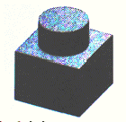
- 다이스
- 각도바이스
- 회전테이블
- 슬로팅 장치
(정답률: 87%)
11. 수기가공에 대한 설명 중 틀린 것은?
- 탭은 나사부와 자루 부분으로 되어 있다.
- 다이스는 수나사를 가공하기 위한 공구이다.
- 다이스는 1번, 2번, 3번 순으로 나사가공을 수행한다.
- 줄의 작업순서는 황목→중목→세목 순으로 한다.
(정답률: 73%)
12. 피복 초경합금으로 만들어진 절삭공구의 피복 처리방법은?
- 탈탄법
- 경남땜법
- 접용접법
- 화학증착법
(정답률: 67%)
13. 터릿 선반의 설명으로 틀린 것은?
- 공구를 교환하는 시간을 단축할 수 있다.
- 가공 실물이나 모형을 따라 윤곽을 깎아낼 수 있다.
- 숙련되지 않은 사람이라도 좋은 제품을 만들 수 있다.
- 보통선반의 심압대 대신 터릿대(turret carriage)를 놓는다.
(정답률: 40%)
14. 다음 중 초음파 가공으로 가공하기 어려운 것은?
- 구리
- 유리
- 보석
- 세라믹
(정답률: 74%)
15. 수기가공에 대한 설명으로 틀린 것은?
- 서피스 게이지는 공작물에 평행선을 긋거나 평행면의 검사용으로 사용된다.
- 스크레이퍼는 줄 가공 후 면을 정밀하게 다듬질 작업하기 위해 사용된다.
- 카운터 보어는 드릴로 가공된 구멍에 대하여 정밀하게 다듬질하기 위해 사용된다.
- 센터펀치는 펀치의 끝이 각도가 60~90도 원뿔로 되어 있고 위치를 표시하기 위해 사용된다.
(정답률: 72%)
16. 밀링머신에서 테이블 백래쉬(back lash)제거장치의 설치 위치는?
- 변속기어
- 자동 이송레버
- 테이블 이송나사
- 테이블 이송핸들
(정답률: 73%)
17. 다음 중 드릴의 파손 원인으로 가장 거리가 먼 것은?
- 이송이 너무 커서 절삭저항이 증가할 때
- 디닝(thinning)이 너무 커서 드릴이 약해졌을 때
- 얇은 판의 구멍가공 시 보조판 나무를 사용할 때
- 절삭칩의 원활한 배출되지 못하고 가득 차 있을 때
(정답률: 86%)
18. 피치 3mm의 3줄 나사가 2회전하였을 때 전진거리는?
- 8mm
- 9mm
- 11mm
- 18mm
(정답률: 85%)
19. 기어절삭에 사용되는 공구가 아닌 것은?
- 호브
- 래크 커터
- 피니언 커터
- 더브테일 커터
(정답률: 76%)
20. 200rpm으로 회전하는 스핀들에서 6회전 휴지(dwell) NC 프로그램으로 옳은 것은?
- G01 P1800;
- G01 P2800;
- G04 P1800;
- G04 P2800;
(정답률: 53%)
2과목: 기계제도
21. 다음 정면도와 우측면도에 가장 적합한 평면도는?
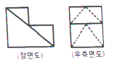
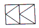
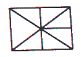
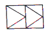
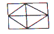
(정답률: 52%)
22. 그림과 같은 도면의 기하공차 설명으로 가장 옳은 것은?
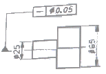
- ø25부분만 중심축에 대한 평면도가 ø0.⑤이내
- 중심축에 대한 전체의 평면도가 ø0.⑤이내
- ø25부분만 중심축에 대한 진직도가 ø0.⑤이내
- 중심축에 대한 전체의 진직도가 ø0.⑤이내
(정답률: 77%)
23. 그림과 같은 정면도와 우측면도에 가장 적합한 평면도는?(오류 신고가 접수된 문제입니다. 반드시 정답과 해설을 확인하시기 바랍니다.)
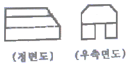
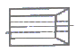
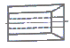
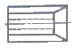
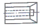
(정답률: 36%)
24. 두께 5.5mm인 강판을 사용하여 그림과 같은 물탱크를 만들려고 할 때 필요한 강판의 질량은 약 몇 kg 인가? (단, 강판의 비중은 7.85로 계산하고 탱크는 전체 6면의 두께가 동일함)
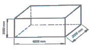
- 1638
- 1727
- 1836
- 1928
(정답률: 33%)
25. 가공에 의한 커터의 줄무늬가 여러 방향일 때 도시하는 기호는?
- =
- X
- M
- C
(정답률: 81%)
26. 다음 KS 재료 기호 중 니켈 크로뮴 몰리브데넘강에 속하는 것은?
- SMn 420
- SCr 415
- SNCM 420
- SFCM 590S
(정답률: 86%)
27. 그림과 같이 제3각법으로 나타낸 정면도와 우측면도에 가장 적합한 평면도는?
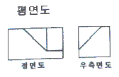
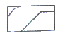
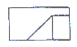
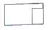
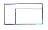
(정답률: 86%)
28. 다음 중 탄소 공구 강재에 해당하는 KS 재료 기호는?
- STS
- STF
- STD
- STC
(정답률: 87%)
29. 코일 스프링 제도에 대한 설명으로 틀린 것은?
- 스프링은 원칙적으로 하중이 걸린 상태로 그린다.
- 특별한 단서가 없으면 오른쪽으로 감은 것을 나타낸다.
- 스프링의 종류 및 모양만을 간략도로 나타내는 경우에는 스프링 재료의 중심선만을 굵은 실선으로 그린다.
- 그림 안에 기입하기 힘든 사항은 일괄적으로 오목표에 나타낸다.
(정답률: 81%)
30. 기하공차 기호 중 위치공차를 나타내는 기호가 아닌 것은?
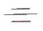
(정답률: 72%)
31. KS 용접 기호표시와 용접부 명칭이 틀린 것은?
 : 플러그 용접
: 플러그 용접 : 점 용접
: 점 용접 : 가장자리 용접
: 가장자리 용접 : 필릿 용접
: 필릿 용접
(정답률: 82%)
32. 그림에서 사용된 단면도의 명칭은?
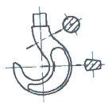
- 한쪽 단면도
- 부분 단면도
- 회전 도시 단면도
- 계단 단면도
(정답률: 58%)
33. 재료의 제거 가공으로 이루어진 상태든 아니든 앞의 제조 공정에서의 결과로 나온 표면 상태가 그대로라는 것을 지시하는 것은?
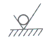
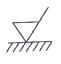
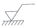
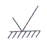
(정답률: 48%)
34. 다음 중 투상도법의 설명으로 올바른 것은?
- 제1각법은 물체와 눈 사이에 투상면이 있는 것이다.
- 제3각법은 평면도가 정면도 위에, 우측면도는 정면도 오른쪽에 있다.
- 제1각법은 우측면도가 정면도 오른쪽에 있다.
- 제3각법은 정면도 위에 배면도가 있고 우측면도는 왼쪽에 있다.
(정답률: 87%)
35. 나사의 표시가 “No.8-36UNF”로 나타날 때, 나사의 종류는?
- 유니파이 보통 나사
- 유니파이 가는 나사
- 관용 테이퍼 수나사
- 관용 테이퍼 암나사
(정답률: 55%)
36. 제3각법으로 도시한 3면도 중 각 도면 간의 관계를 가장 옳게 나타낸 것은?
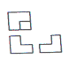
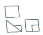
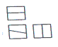
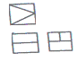
(정답률: 72%)
37. 최대 틈새가 0.075mm 이고, 축의 초소 허용 치수가 49.950mm 일 때 구멍의 최대 허용 치수는?
- 50.074mm
- 49.875mm
- 49.975mm
- 50.025mm
(정답률: 84%)
38. I-형강의 치수 기입이 옳은 것은? (단, B:폭, H:높이, t:두께, L:길이)
- IB×H×t-L
- IH×B×t-L
- It×HB-L
- IL×H×B-t
(정답률: 76%)
39. 모듈이 2인 한 의 외접하는 표준 스퍼기어 잇수가 각각 20과 40으로 맞물려 회전할 때 두 축간의 중심거리는 척도 1:1 도면에는 몇 mm로 그려야 하는가?
- 30mm
- 40mm
- 60mm
- 120mm
(정답률: 48%)
40. 베어링 기호 608C2P6에서 P6가 뜻하는 것은?
- 정밀도 등급 기호
- 계열 기호
- 안지름 번호
- 내부 틈새 기호
(정답률: 74%)
3과목: 기계설계 및 기계재료
41. 다음 원소 중 중금속이 아닌 것은?
- Fe
- Ni
- Mg
- Cr
(정답률: 77%)
42. 담금질 조직 중 경도가 가장 높은 것은?
- 펄라이트
- 마텐자이트
- 소르바이트
- 트루스타이트
(정답률: 87%)
43. 특수강에 들어가는 합금 원소 중 탄화물형성과 결정립을 미세화하는 것은?
- P
- Mn
- Si
- Ti
(정답률: 54%)
44. 순철에서 나타나는 변태가 아닌 것은?
- A1
- A2
- A3
- A4
(정답률: 44%)
45. 금속침투법에서 Zn을 침투시키는 것은?
- 크로마이징
- 세러다이징
- 칼로라이징
- 실리코나이징
(정답률: 73%)
46. 알루미늄 및 그 합금의 질별 기호 중 가공경화한 것을 나타내는 것은?
- O
- W
- Fa
- Hb
(정답률: 43%)
47. 강을 오스테나이트화 한 후, 공랭하여 표준화된 조직을 얻는 열처리는?
- 퀜칭(Quenching)
- 어닐링(Annealing)
- 템퍼링(Tempering)
- 노멀라이징(Normalizing)
(정답률: 74%)
48. 금속간 화합물에 관하여 설명한 것 중 틀린 것은?
- 경하고 취약하다.
- Fe3C는 금속간 화합물이다.
- 일반적으로 복잡한 결정구조를 갖는다.
- 전기저항이 작으며, 금속적 성질이 강하다.
(정답률: 54%)
49. 다음 구조용 복합재료 중에서 섬유강화 금속은?
- SPF
- FRM
- FRP
- GFRP
(정답률: 80%)
50. 동합금에서 황동에 납을 1.5~3.7%까지 첨가한 합금은?
- 강력 황동
- 쾌삭 황동
- 배빗 메탈
- 델타 메탈
(정답률: 77%)
51. 다음 중 제동용 기계요소에 해당하는 것은?
- 웜
- 코터
- 랫칫 휠
- 스플라인
(정답률: 73%)
52. 피치원 지름이 무한대인 기어는?
- 래크(rack) 기어
- 헬리컬(helical) 기어
- 하이포이드(hypoid) 기어
- 나사(screw) 기어
(정답률: 75%)
53. 블록 브레이크의 드럼이 20m/s의 속도로 회전하는데 블록을 500N의 힘으로 가압할 경우 제동 동력은 약 몇 kW인가? (단, 접촉부 마찰계수는 0.3이다.)
- 1.0
- 1.7
- 2.3
- 3.0
(정답률: 51%)
54. 30°미터 사다리꼴나사(1줄 나사)의 유효지름이 18mm이고, 피치는 4mm 이며 나사 접촉부 마찰계수는 0.15일 때 이 나사의 효율은 약 몇 % 인가?
- 24%
- 27%
- 31%
- 35%
(정답률: 27%)
55. 구름 베어링에서 실링(sealing)의 주목적으로 가장 적합한 것은?
- 구름 베어링에 주유를 주입하는 것을 돕는다.
- 구름 베어링의 발열을 방지한다.
- 윤활유의 유출 방지와 유해물의 침입을 방지한다.
- 축에 구름 베어링을 끼울 때 삽입을 돕는다.
(정답률: 80%)
56. 300rpm으로 3.1kW의 동력을 전달하고, 축재료의 허용전단응력은 20.6MPa인 중실축의 지름은 약 몇 mm 이상이어야 하는가?
- 20
- 29
- 36
- 45
(정답률: 31%)
57. 벨트의 접촉각을 변화시키고 벨트의 장력을 증가시키는 역할을 하는 풀리는?
- 원동 풀리
- 인장 풀리
- 종동 풀리
- 원추 풀리
(정답률: 78%)
58. 두께 10mm 강판을 지름 20mm 리벳으로 한줄 겹치기 리벳 이음을 할 때 리벳에 발생하는 전단력과 판에 작용하는 인장력이 같도록 할 수 있는 피치는 약 몇 mm 인가? (단, 리벳에 작용하는 전단응력과 판에 작용하는 인장응력은 동일하다고 본다.)
- 51.4
- 73.6
- 163.6
- 2⑤.6
(정답률: 15%)
59. 하중이 2.5kN 작용하였을 때 처짐이 100mm 발생하는 코일 스프링의 소선 지름은 10mm이다. 이 스프링의 유효 감김수는 약 몇 권인가? (단, 스프링 지수(C)는 10 이고, 스프링 선재의 전단탄성계수는 80GPa 이다.)
- 3
- 4
- 5
- 6
(정답률: 30%)
60. 다음 중 축에는 가공을 하지 않고 보스 쪽에만 홈을 가공하여 조립하는 키는?
- 안장 키 (saddle key)
- 납작 키 (flat key)
- 묻힘 키 (sunk key)
- 둥근 키 (round key)
(정답률: 70%)
4과목: 컴퓨터응용설계
61. CAD 소프트웨어와 가장 관계가 먼 것은?
- AutoCAD
- EXCEL
- Solid Works
- CATIA
(정답률: 89%)
62. 그림과 같이 여러 개의 단면형상을 생성하고 이들을 덮어 싸는 곡면을 생성하였다. 이는 어떤 모델링 방법인가?
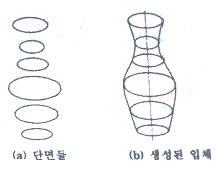
- 스위핑
- 리프팅
- 블랜딩
- 스키닝
(정답률: 68%)
63. CSG방식 모델링에서 기초형상(primitive)에 대한 가장 기본적인 조합 방식에 속하지 않는 것은?
- 합집합
- 차집합
- 교집합
- 여집합
(정답률: 82%)
64. 솔리드 모델의 데이터 구조 중 CSG와 비교한 경계 표현(Boundary representation)방식의 특징은?
- 파라메트릭 모델링을 쉽게 구현할 수 있다.
- 데이터 구조의 관리가 용이하다.
- 경계면 형상을 화면에 빠르게 나타낼 수 있다.
- 데이터 구조가 간단하고 기억용량이 적다.
(정답률: 55%)
65. 다음 중 주어진 조정점(기준점)을 모두 통과하는 곡선은?
- Bezier곡선
- B-Spline곡선
- Spline곡선
- NURBS곡선
(정답률: 69%)
66. CAD 소프트웨어의 도입효과로 가장 거리가 먼 것은?
- 제품 개발기간 단축
- 설계 생산성 향상
- 업무 표준화 촉진
- 부서 간 의사소통 최소화
(정답률: 86%)
67. 래스터(Raster) 그래픽 장치의 Frame buffer에서 1화소 당 24bit를 사용한다면 몇 가지의 색을 동시에 나타낼 수 있는가?
- 256
- 65536
- 1048576
- 16777216
(정답률: 68%)
68. B-Spline 곡선의 설명으로 옳은 것은?
- 각 조정점(control vertex)들이 전체 곡선의 형상에 영향을 준다.
- 곡선의 형상을 국부적으로 수정하기 어렵다.
- 곡선의 차수는 조정점의 개수와 무관하다.
- Hermite 곡선식을 사용한다.
(정답률: 57%)
69. 3차원 좌표계를 표현하는 데 있어서 P(r, θ, z1)로 표현되는 좌표계는 무엇인가? (단, r은 (x,y)평면에서의 직선거리, θ는 (x,y)평면에서의 각도, z1은 z축 방향 거리이다.)
- 직교좌표계
- 극좌표계
- 원통좌표계
- 구면좌표계
(정답률: 50%)
70. 2차원 스케치 평면에서 임의의 사각형을 정의하기 위해 필요한 형상 구속조건 및 치수조건을 합치면 총 몇 개 인가? (단, 직사각형의 네 꼭지점 좌표를 (x1, y1), (x2, y2), (x3, y3), (x4, y4)으로 표시할 때, x1=3이라고 한다면 치수조건을 준 경우이고 x1=x2과 같이 표현한다면 형상 구속조건을 준 경우이다. 또한 각 조건은 x방향과 y방향을 별개로 한다.)
- 2개
- 4개
- 6개
- 8개
(정답률: 50%)
71. 서로 만나는 2개의 평면 혹은 곡면에서 서로 만나는 모서리를 곡면으로 바꾸는 작업을 무엇이라고 하는가?
- blending
- sweeping
- remeshing
- trimming
(정답률: 78%)
72. 경계표현방식(B-rep)에 의해서 물체 형상을 표현하고자 할 때 기본적인 구성요소라고 할 수 없는 것은?
- 꼭지점(vertice)
- 면(face)
- 모서리(edge)
- 벡터(vector)
(정답률: 57%)
73. 제품 도면정보가 컴퓨터에 저장되어 있는 경우에 공정계획을 컴퓨터를 이용하여 빠르고 정확하게 수행하고자 하는 기술은?
- CAPP(Computer-aided Process Planning)
- CAE(Computer-aided Engineering)
- CAI(Computer-aided Inspection)
- CAD(Computer-aided Design)
(정답률: 74%)
74. 3차원 변환에서 Y축을 중심으로 a의 각도만큼 회전한 경우의 변환행렬(T)은? (단, 변환식은 P′=PT이고, P′는 회전 후 좌표, P는 회전하기 전 좌표이다.)
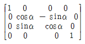
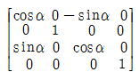
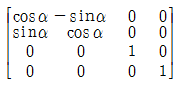
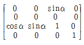
(정답률: 62%)
75. CAD 시스템에서 일반적인 선의 속성(attribute)으로 거리가 먼 것은?
- 선의 굵기(line thickness)
- 선의 색상(line color)
- 선의 밝기(line brightness)
- 선의 종류(line type)
(정답률: 87%)
76. 다음 중 Bezier 곡선의 설명으로 틀린 것은?
- 곡선은 조정 다각형(control polygon)의 시작점과 끝점을 반드시 통과한다.
- n차 Bezier 곡선의 조정점(control vertex)들의 개수는 n-1개이다.
- 조정 다각형의 첫 번째 선분은 시작점에서의 접선벡터와 같은 방향이다.
- 조정 다각형의 꼭지점의 순서가 거꾸로 되어도 같은 Bezier 곡선이 만들어진다.
(정답률: 62%)
77. (x,y) 좌표계에서 선의 방정식이 “ax+by+c=0” 으로 나타났을 때의 선은? (단, a,b,c는 상수이다.)
- 직선(line)
- 스플라인 곡선(spline curve)
- 원(circle)
- 타원(ellipse)
(정답률: 72%)
78. CAD용어 중 회전특징 형상 모양으로 잘려 나간 부분에 해당하는 특징 형상을 무엇이라고 하는가?
- 홀(hole)
- 그루브(groove)
- 챔퍼(chamfer)
- 라운드(round)
(정답률: 70%)
79. 다음 중 기존의 제품에 대한 치수를 측정하여 도면을 만드는 작업을 부르는 말로 적절한 것은?
- RE(Reverse Engineering)
- FMS(Flexible Manufacturing System)
- EDP(Electronic Data Processing)
- ERP(Enterprise Resource Planning)
(정답률: 74%)
80. CAD에서 사용되는 모델링 방식에 대한 설명 중 잘못된 것은?
- wire frame model : 음영 처리하기가 용이하다.
- surface model : NC data를 생성 할 수 있다.
- solid model : 정의된 형상의 질량을 구할 수 있다.
- surface model : tool path를 구할 수 있다.
(정답률: 73%)